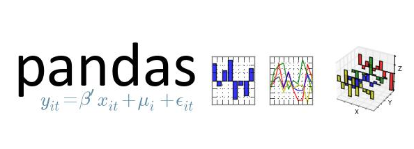

原创 Python数据分析之pandas学习（一）
lsxxx2011 5818 0 0 0 2016-08-20
我们接着上次分享给大家的两篇文章：Python数据分析之numpy学习（一）和Python数据分析之numpy学习（二），继续讨论使用Python中的pandas模块进行数据分。在接下来的两期pandas介绍中将学习到如下8块内容：
1、数据结构简介：DataFrame和Series
2、数据索引index
3、利用pandas查询数据
4、利用pandas的DataFrames进行统计分析
5、利用pandas实现SQL操作
6、利用pandas进行缺失值的处理
7、利用pandas实现Excel的数据透视表功能
8、多层索引的使用

一、数据结构介绍
在pandas中有两类非常重要的数据结构，即序列Series和数据框DataFrame。Series类似于numpy中的一维数组，除了通吃一维数组可用的函数或方法，而且其可通过索引标签的方式获取数据，还具有索引的自动对齐功能；DataFrame类似于numpy中的二维数组，同样可以通用numpy数组的函数和方法，而且还具有其他灵活应用，后续会介绍到。
1、Series的创建
序列的创建主要有三种方式：
1）通过一维数组创建序列
import numpy as np, pandas as pdarr1 = np.arange(10)arr1type(arr1)s1 = pd.Series(arr1)s1type(s1)
2）通过字典的方式创建序列
dic1 = {'a':10,'b':20,'c':30,'d':40,'e':50}dic1type(dic1)s2 = pd.Series(dic1)s2type(s2)
3）通过DataFrame中的某一行或某一列创建序列
这部分内容我们放在后面讲，因为下面就开始将DataFrame的创建。
2、DataFrame的创建
数据框的创建主要有三种方式：
1）通过二维数组创建数据框
arr2 = np.array(np.arange(12)).reshape(4,3)arr2type(arr2)df1 = pd.DataFrame(arr2)df1type(df1)
2）通过字典的方式创建数据框
以下以两种字典来创建数据框，一个是字典列表，一个是嵌套字典。
dic2 = {'a':[1,2,3,4],'b':[5,6,7,8],'c':[9,10,11,12],'d':[13,14,15,16]}dic2type(dic2)df2 = pd.DataFrame(dic2)df2type(df2)dic3 = {'one':{'a':1,'b':2,'c':3,'d':4},'two':{'a':5,'b':6,'c':7,'d':8},'three':{'a':9,'b':10,'c':11,'d':12}}dic3type(dic3)df3 = pd.DataFrame(dic3)df3type(df3)
3）通过数据框的方式创建数据框
df4 = df3[['one','three']]df4type(df4)s3 = df3['one']s3type(s3)
二、数据索引index
细致的朋友可能会发现一个现象，不论是序列也好，还是数据框也好，对象的最左边总有一个非原始数据对象，这个是什么呢？不错，就是我们接下来要介绍的索引。
在我看来，序列或数据框的索引有两大用处，一个是通过索引值或索引标签获取目标数据，另一个是通过索引，可以使序列或数据框的计算、操作实现自动化对齐，下面我们就来看看这两个功能的应用。
1、通过索引值或索引标签获取数据
s4 = pd.Series(np.array([1,1,2,3,5,8]))s4
如果不给序列一个指定的索引值，则序列自动生成一个从0开始的自增索引。可以通过index查看序列的索引：
s4.index
现在我们为序列设定一个自定义的索引值：
s4.index = ['a','b','c','d','e','f']s4
序列有了索引，就可以通过索引值或索引标签进行数据的获取：
s4[3]s4['e']s4[[1,3,5]]s4[['a','b','d','f']]s4[:4]s4['c':]s4['b':'e']
千万注意：如果通过索引标签获取数据的话，末端标签所对应的值是可以返回的！在一维数组中，就无法通过索引标签获取数据，这也是序列不同于一维数组的一个方面。
2、自动化对齐
如果有两个序列，需要对这两个序列进行算术运算，这时索引的存在就体现的它的价值了—自动化对齐.
s5 = pd.Series(np.array([10,15,20,30,55,80]),index = ['a','b','c','d','e','f'])s5s6 = pd.Series(np.array([12,11,13,15,14,16]),index = ['a','c','g','b','d','f'])s6s5 + s6s5/s6
由于s5中没有对应的g索引，s6中没有对应的e索引，所以数据的运算会产生两个缺失值NaN。注意，这里的算术结果就实现了两个序列索引的自动对齐，而非简单的将两个序列加总或相除。对于数据框的对齐，不仅仅是行索引的自动对齐，同时也会自动对齐列索引（变量名）
数据框中同样有索引，而且数据框是二维数组的推广，所以其不仅有行索引，而且还存在列索引，关于数据框中的索引相比于序列的应用要强大的多，这部分内容将放在数据查询中讲解。
三、利用pandas查询数据
这里的查询数据相当于R语言里的subset功能，可以通过布尔索引有针对的选取原数据的子集、指定行、指定列等。我们先导入一个student数据集：
student = pd.io.parsers.read_csv('C:\\Users\\admin\\Desktop\\student.csv')
查询数据的前5行或末尾5行
student.head()student.tail()
查询指定的行
student.ix[[0,2,4,5,7]] #这里的ix索引标签函数必须是中括号[]
查询指定的列
student[['Name','Height','Weight']].head() #如果多个列的话，必须使用双重中括号
也可以通过ix索引标签查询指定的列
student.ix[:,['Name','Height','Weight']].head()
查询指定的行和列
student.ix[[0,2,4,5,7],['Name','Height','Weight']].head()
以上是从行或列的角度查询数据的子集，现在我们来看看如何通过布尔索引实现数据的子集查询。
查询所有女生的信息
student[student['Sex']=='F']
查询出所有12岁以上的女生信息
student[(student['Sex']=='F') & (student['Age']>12)]
查询出所有12岁以上的女生姓名、身高和体重
student[(student['Sex']=='F') & (student['Age']>12)][['Name','Height','Weight']]
上面的查询逻辑其实非常的简单，需要注意的是，如果是多个条件的查询，必须在&（且）或者|（或）的两端条件用括号括起来。
四、统计分析
pandas模块为我们提供了非常多的描述性统计分析的指标函数，如总和、均值、最小值、最大值等，我们来具体看看这些函数：
首先随机生成三组数据
np.random.seed(1234)d1 = pd.Series(2*np.random.normal(size = 100)+3)d2 = np.random.f(2,4,size = 100)d3 = np.random.randint(1,100,size = 100)d1.count() #非空元素计算d1.min() #最小值d1.max() #最大值d1.idxmin() #最小值的位置，类似于R中的which.min函数d1.idxmax() #最大值的位置，类似于R中的which.max函数d1.quantile(0.1) #10%分位数d1.sum() #求和d1.mean() #均值d1.median() #中位数d1.mode() #众数d1.var() #方差d1.std() #标准差d1.mad() #平均绝对偏差d1.skew() #偏度d1.kurt() #峰度d1.describe() #一次性输出多个描述性统计指标
必须注意的是，descirbe方法只能针对序列或数据框，一维数组是没有这个方法的
这里自定义一个函数，将这些统计描述指标全部汇总到一起:
def stats(x):return pd.Series([x.count(),x.min(),x.idxmin(),x.quantile(.25),x.median(),x.quantile(.75),x.mean(),x.max(),x.idxmax(),x.mad(),x.var(),x.std(),x.skew(),x.kurt()],index = ['Count','Min','Whicn_Min','Q1','Median','Q3','Mean','Max','Which_Max','Mad','Var','Std','Skew','Kurt'])stats(d1)
在实际的工作中，我们可能需要处理的是一系列的数值型数据框，如何将这个函数应用到数据框中的每一列呢？可以使用apply函数，这个非常类似于R中的apply的应用方法。
将之前创建的d1,d2,d3数据构建数据框:
df = pd.DataFrame(np.array([d1,d2,d3]).T,columns=['x1','x2','x3'])df.head()df.apply(stats)
非常完美，就这样很简单的创建了数值型数据的统计性描述。如果是离散型数据呢？就不能用这个统计口径了，我们需要统计离散变量的观测数、唯一值个数、众数水平及个数。你只需要使用describe方法就可以实现这样的统计了。
student['Sex'].describe()
除以上的简单描述性统计之外，还提供了连续变量的相关系数（corr）和协方差矩阵（cov）的求解，这个跟R语言是一致的用法。
df.corr()
关于相关系数的计算可以调用pearson方法或kendell方法或spearman方法，默认使用pearson方法。
df.corr('spearman')
如果只想关注某一个变量与其余变量的相关系数的话，可以使用corrwith,如下方只关心x1与其余变量的相关系数:
df.corrwith(df['x1'])
数值型变量间的协方差矩阵
df.cov()
今天就介绍到这里，在下一期中我们继续剩余部分的介绍和讲解。
数据人网作者：刘顺祥
数据分析师，热爱数据分析与挖掘工作，擅长使用Ｒ语言，目前自学Python语言。
数据人网是数据人学习、交流和分享的平台http://shujuren.org 。专注于从数据中学习。
平台的理念：人人投稿，知识共享；人人分析，洞见驱动；智慧聚合，普惠人人。
您在数据人网平台，可以1）学习数据知识；2）创建数据博客；3）认识数据朋友；4）寻找数据工作；5）找到其它与数据相关的干货。
我们努力坚持做原创，分享和传播数据知识干货！
我们都是数据人，数据是有价值的，坚定不移地利用数据价值创造价值！
严禁修改，可以转载，请注明出自数据人网。
 lsxxx2011
lsxxx2011 
还没有账号？ 注册